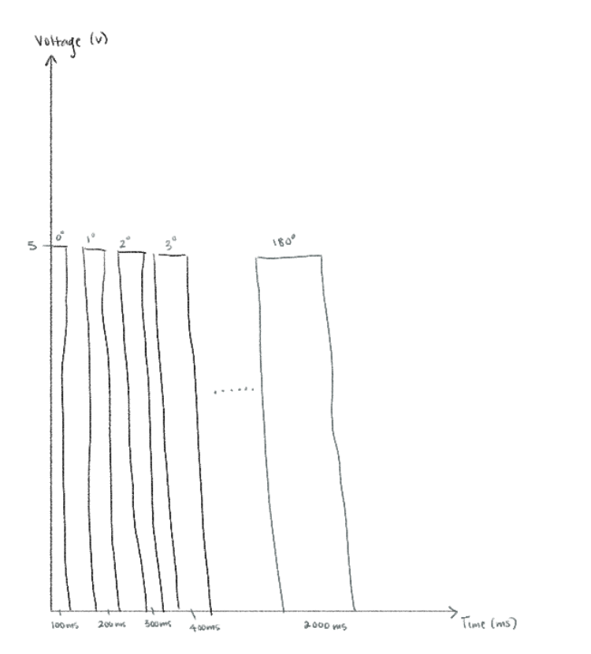

Circuit in Action
Here is a video of my circuit in action:

Based on the way I coded my circuit, my servo motor will move to a 45 degree angle, and wait 20ms for the servo to get there, then the same process repeated for the motor to move to a a 90 degree angle, then to 125 degrees, and then 180 degrees if I am touching the keys. When the keys are untouched, the servo motor will not move. This is demonstrated in the video above.
Additional Questions
(1) Given the code provided in Question 1, draw a graph with the X axis in seconds, for two seconds, and the y-axis the voltage at pin 9 with respect to ground.
(2) To mitigate the 1% error, I will take five readings and return the median value, minimizing the influence of outliers and reducing the impact of extreme values.
long SensorValue() {
long sensorVal[5]; // store 5 sensor readings
for (int index = 0; index < 5; index++) {
sensorVal[index] = cs_4_2.capacitiveSensor(30); // read sensor multiple times
delay(10);
}
// Sort array and return median
for (int outer = 0; outer < 4; outer++) {
for (int inner = outer + 1; inner < 5; inner++) {
if (sensorVal[outer] > sensorVal[inner]) {
long tempValue = sensorVal[outer];
sensorVal[outer] = sensorVal[inner];
sensorVal[inner] = tempValue;
}
}
}
return sensorVal[2]; // median value
}
(3) If my input device is slightly noisy, leading the measurement to randomly deviate from the true measurement up or down by 10%, I would take 10 readings and return the average, smoothing out any fluctuations.
long SensorValue() {
long readings[10]; // store 10 readings
long sum = 0;
for (int i = 0; i < 10; i++) { // take 10 readings
readings[i] = cs_4_2.capacitiveSensor(30); // read sensor multiple times
sum += readings[i];
delay(5);
}
return sum/10; // return the avg value
}